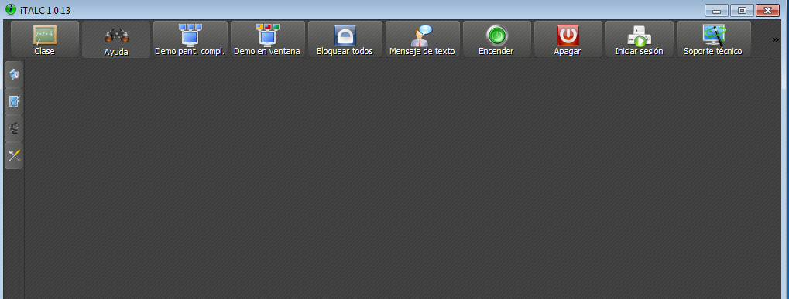

- Módulo: Sistemas Operativos
- Título del trabajo registro de eventos
- Componentes del grupo: Silvano Pérez Yanes
- Curso Académico: 2013/2014
- Fecha de entrega: 16 de Junio de 2014
En esta practica vamos a monitorizar otras maquinas virtuales mediante la herramienta italc; en este caso con el sistema operativo debian, siendo el mismo el master de la monitorización. Para empezar creamos un usario que sera el anfitrión del programa; también creamos un grupo donde ira dicho usuario, sera un grupo del programa. Creamos un par de claves del programa, tanto publicas como privadas; configuramos el modo de arranque para que arranque de forma directa con el usuario y una vez finalizado las configuraciones, probamos el programa.
En este caso el sistema operativo windows sera el invitado del programa, para ser visualizado por el sistema operativo debian; una vez instalado el programa hay que copiar las claves plublicas del italc master de debian para que se pueda visualizar al windows y una vez copiado la clave se prueba el programa.
Para acabar se instala el programa en el sistema operativo ubuntu, para finalizar la actividad; al igual que en windows, se debe copiar la clave publica del italc master, para poder ser visualizado por el master; y probamos como funciona.
La monitorización de los sistemas operativos no ha sido porsibles ya que he tenido problemas de tiempo y con las claves del programa; que no las reconocia en el windows; unas vez probe el programa en debian no me permitia conectar con el windows.